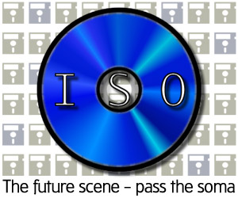

If you answer yes to these three questions then you're an ideal candidate for the exciting world of isos... An iso is basically a snapshot image of a CD saved to file. If created properly, it contains and preserves all file creation dates, CD labels, attributes, etc. Anyone with the proper equipment (a CDR and any decent CDR burning utility) has the ability to create their own iso images and to burn other iso images to CD. Enter the "iso scene": »»»Of course there are some stumbling blocks in this very young scene. The image files are massive - usually around 615 megs. This leaves the thousands of people still stuck on dial-up connections out in the cold. Download times are about 1-2 hours with average speeds to many resnet traders and less to people using fast cable modems. It is standard practice to rar the image into 15 meg chunks, but most ftp server daemons are written assuming incoming files will be zipped. Compression has to be disabled when rar'ing as well to save time on both ends when dealing with such a massive file. There are still very hazy standards on what format is best to use when creating images (there are many) mostly because different utilities support different CDRs. There is also a lack of good informative nfo files, with most nfos either MIA or looking like a 20 second slap-together job. It only takes a few minutes to put together a good nfo and can save a lot of people a lot of time and headaches... »»»As it stands now, the majority of the iso scene is made up of independent traders. There has been some recent group formation but nobody is really dominating. One of the reasons for this is the nature of isos themselves; no cracking expertise is required to make and trade isos. The whole concept of the 0-day group hierarchy loses its meaning when any lamer with a CDR can do what they can. Some 0-day supporters feel threatened; they see the iso scene as stripping away the "creativity" and "artistic" nature of the 0-day scene. There will always be a need for 0-day releases and rips because not everything deserves or needs to be traded as an iso. And there will still be a need for dongle crackers, because sometimes it's not enough to just have the CD. A few notable 0-day groups have been testing the waters recently - RAZOR and RiSC have created iso divisions within their groups. CIFE is another crew worth mentioning with some experienced scene members bringing a bit of tradition to the young iso scene. Look for more release crews to start putting out isos in the next year. »»»Overall the pros far outweigh the cons of isos. There will not be any serious growth to the scene, however, until the bandwidth problem is resolved. As more and more people migrate to ADSL or cable modems or Tx connections, the scene will continue to grow. Things should be pretty lean over the summer as all the resnet traders disappear, but look for an iso explosion in late 98. CDR prices also continue to plummet, making the units commonplace. It will be interesting to see the impact of DVD drives on the whole game industry. It is quite reasonable to expect many companies to migrate to another format that is harder/more work to duplicate if the practice of iso trading really takes off. Regardless, there are good things in store for all the iso'ers abroad. As always, one step ahead of the anti-piracy schemers... finis nfos for iso groups
|